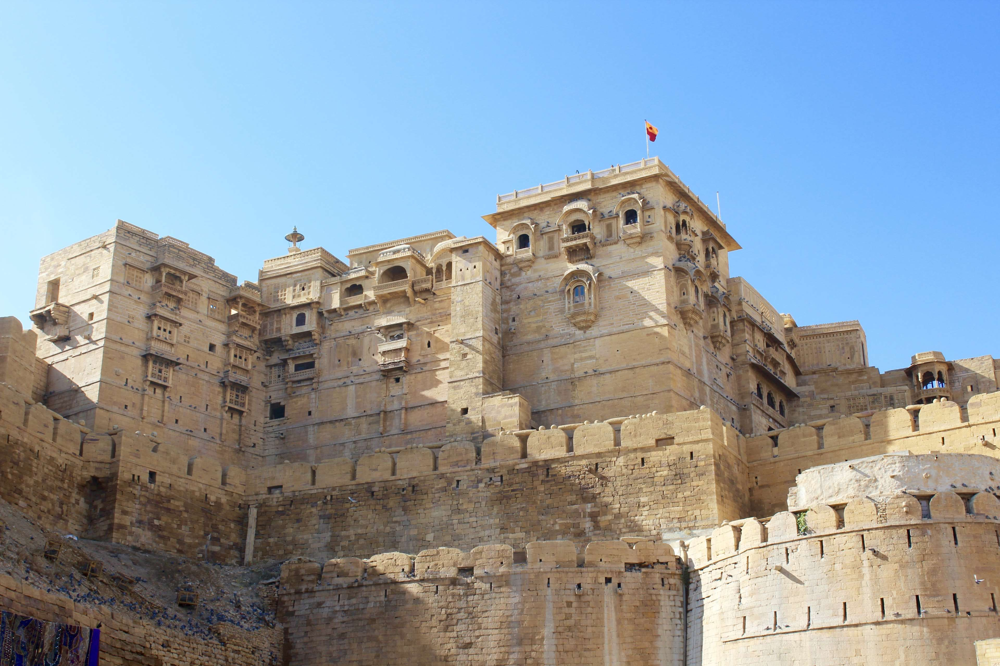
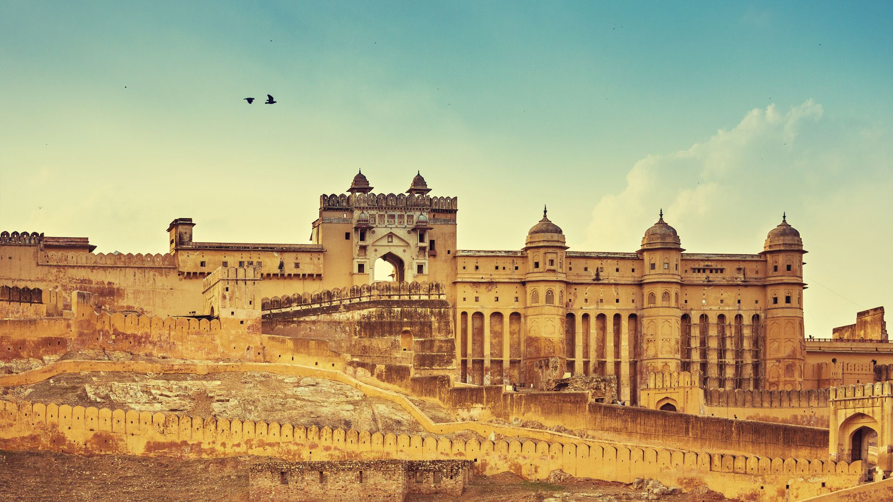

About the Royal Retreat
Rajasthan is home to opulent heritage hotels, many of which were once royal palaces or forts. Some famous ones include:
Umaid Bhawan Palace (Jodhpur): A stunning blend of Indo-Saracenic and Art Deco styles.
Palace (Jaipur): Once the residence of Jaipur’s Maharaja.
Lake Palace (Udaipur): A luxury hotel located on an island in Lake Pichola.
2. Palaces and Forts
The state is adorned with grand palaces and forts that showcase its regal past:
Amber Fort (Jaipur): Known for its artistic Hindu-Muslim architecture.
Mehrangarh Fort (Jodhpur): A massive fort with panoramic views of the city.
City Palace (Udaipur): A lakeside palace with intricate architecture.
3. Cultural Experiences
Cuisine: Enjoy royal dishes like Dal Baati Churma, Gatte ki Sabzi, and sweets like Ghevar.
Folk Performances: Witness Rajasthani music, dances like Ghoomar, and puppet shows.
Safaris: Experience the golden sand dunes of Jaisalmer.